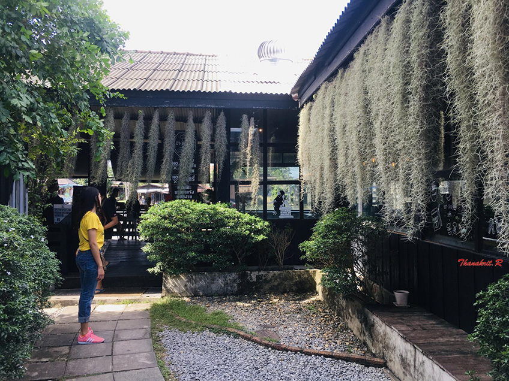
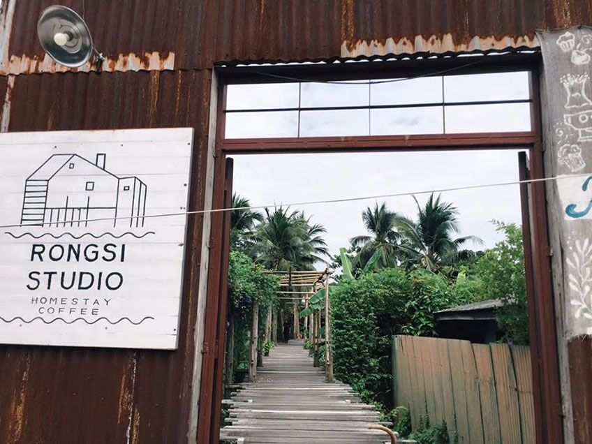

Rongsri Studio
Rongsri Studio บอกเลยว่าเป็นคาเฟ่ที่ชาวนนทบุรีห้ามพลาด ! หรือสายคาเฟ่ก็ควรค่าแก่ไปเช็คอินสุดๆ อยู่ใกล้กรุงเทพฯนิ๊ดดเดียว ! บรรยากาศดีต่อใจ ไปนั่งชิลๆ ริมแม่น้ำเจ้าพระยา ดีไซน์ของเค้าสุดเท่ด้วยการปรับปรุงจากโรงสีเก่า ให้กลายเป็นคาเฟ่สุดชิค เหมาะกับการชวนเพื่อน หรือคนพิเศษมานั่งชิลในวันหยุดค่ะ แถมอาหารก็ยังมีครบทั้งคาวหวาน จะมาฝากท้องมื้อหนัก หรือจิบกาแฟ กินขนมเบาๆ ก็ดีไปหมด สายคาเฟ่ต้องมาแล้วน้า
Arelomdee Cafe
อาลมดี คาเฟ่ อีกหนึ่งคาเฟ่ริมแม่น้ำ ที่บอกเลยว่าใครไปก็ต้องตกหลุมรักในบรรยากาศชิลๆ ริมแม่น้ำ ที่มองเห็นวิถีชีวิตชาวฝั่งคลอง ได้ฟีลไปนั่งพักผ่อนบ้านญาติที่ต่างจังหวัดมากค่ะ หรือจะเลือกนั่งโซนห้องแอร์เย็นๆ ก็ได้น้า และไม่ว่าจะหิวหนัก หิวเบา ก็สามารถฝากท้องกับร้าน อาลมดี ได้เลยค่ะ เพราะเค้ามีเมนูให้เลือกเพียบ ! ไม่ว่าจะเป็นอาหารทานเล่น อาหารมื้อหลัก ขนม เบอร์เกอร์ เครื่องดื่มต่างๆ จัดเต็มมาเสิร์ฟริมน้ำกันเลยทีเดียว จะถ่ายรูปก็ชิค รับรองว่าได้รูปสวยๆ กลับไปแน่นอนค่า